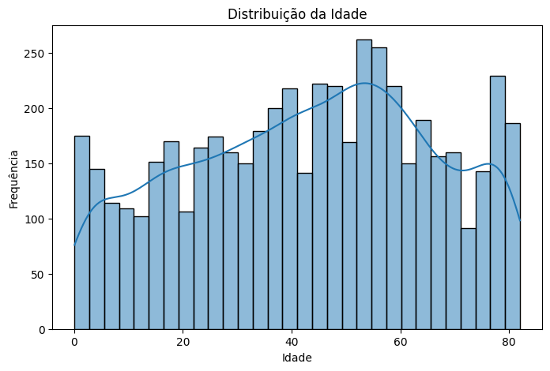
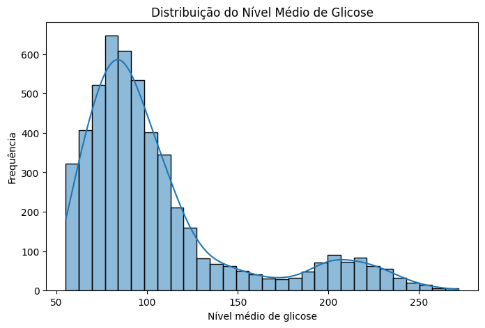
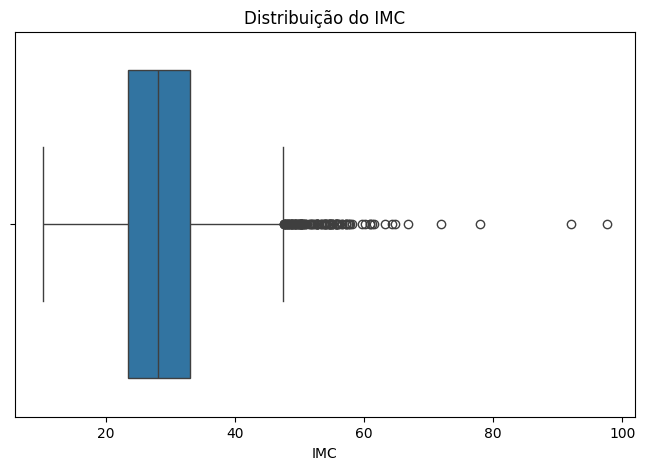
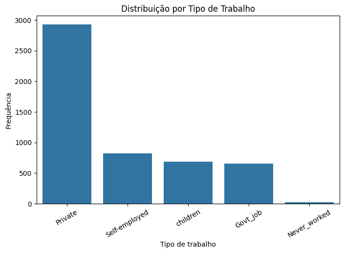
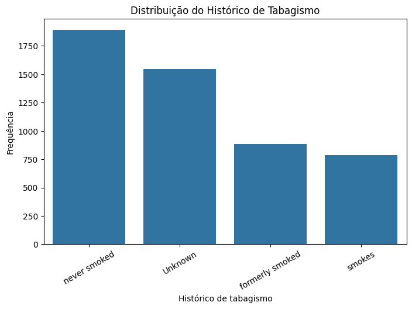
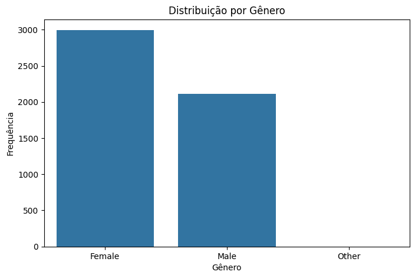

Análise Univariada
A análise univariada busca compreender individualmente a distribuição e as principais características das variáveis do dataset.
Variáveis Numéricas
Foram consideradas como variáveis numéricas quantitativas age, avg_glucose_level e bmi. As colunas binárias e a variável id não foram incluídas nesta análise, pois não representam medidas quantitativas contínuas.
Estatísticas Descritivas
numericas = ["age", "avg_glucose_level", "bmi"]
df[numericas].describe()
| Estatística | age |
avg_glucose_level |
bmi |
|---|---|---|---|
| Média | 43,23 | 106,15 | 28,89 |
| Mediana | 45,00 | 91,89 | 28,10 |
| Desvio padrão | 22,61 | 45,28 | 7,85 |
| Mínimo | 0,08 | 55,12 | 10,30 |
| 1º quartil (25%) | 25,00 | 77,25 | 23,50 |
| 3º quartil (75%) | 61,00 | 114,09 | 33,10 |
| Máximo | 82,00 | 271,74 | 97,60 |
A variável age apresenta média de 43,23 anos e mediana de 45 anos, com valores distribuídos entre 0,08 e 82 anos.
Em avg_glucose_level, a média (106,15) é superior à mediana (91,89), além de o valor máximo (271,74) estar consideravelmente distante do terceiro quartil (114,09). Esses resultados sugerem uma possível assimetria à direita, investigada visualmente a seguir.
Para bmi, a média (28,89) e a mediana (28,10) são próximas. Entretanto, o valor máximo de 97,60 está bastante acima do terceiro quartil (33,10), indicando a possível presença de valores extremos.
A existência de possíveis outliers não implica que essas observações sejam incorretas. Sua distribuição deve ser analisada antes de qualquer decisão de tratamento.
Distribuição da Idade
sns.histplot(data=df, x="age", bins=30, kde=True)

A variável age apresenta uma distribuição ampla, abrangendo desde indivíduos com menos de um ano até 82 anos. Observa-se maior concentração de indivíduos adultos e de meia-idade, especialmente na faixa aproximada entre 40 e 60 anos.
A média de 43,23 anos e a mediana de 45 anos são relativamente próximas, embora a distribuição visual não apresente formato perfeitamente simétrico ou normal.
Distribuição do Nível Médio de Glicose
sns.histplot(data=df, x="avg_glucose_level", bins=30, kde=True)

A variável avg_glucose_level apresenta uma distribuição assimétrica à direita, com maior concentração de observações aproximadamente entre 70 e 110. Também é possível observar um segundo agrupamento, menos frequente, em valores próximos de 200.
Essa assimetria é consistente com as estatísticas descritivas, nas quais a média (106,15) é superior à mediana (91,89). Além disso, a distribuição se estende até o valor máximo de 271,74, indicando a presença de valores elevados que merecem atenção na análise de possíveis outliers.
Distribuição do IMC
Para complementar a análise do bmi, foi utilizado um boxplot, permitindo visualizar a dispersão dos dados e possíveis valores extremos.
sns.boxplot(data=df, x="bmi")

O bmi apresenta mediana de 28,10 e a maior parte dos valores está concentrada em uma faixa relativamente estreita. Entretanto, o boxplot evidencia diversos valores extremos na parte superior da distribuição, alguns chegando próximos ao máximo de 97,60.
Esses valores são considerados possíveis outliers pelo critério visual do boxplot, mas não podem ser classificados automaticamente como erros. Por isso, seu tratamento deverá ser avaliado posteriormente na etapa de pré-processamento.
Variáveis Categóricas
Para as variáveis categóricas, foram calculadas as frequências de cada categoria. Três variáveis foram selecionadas para representação gráfica: work_type, smoking_status e gender.
categoricas = ["work_type", "smoking_status", "gender"]
for coluna in categoricas:
print(f"\n{coluna}")
print(df[coluna].value_counts())
Tipo de Trabalho
sns.countplot(
data=df,
x="work_type",
order=df["work_type"].value_counts().index
)

A variável work_type apresenta uma distribuição desigual entre suas categorias. A categoria Private é predominante, com 2.925 indivíduos, seguida por Self-employed (819), children (687) e Govt_job (657).
A categoria Never_worked é pouco frequente, aparecendo em apenas 22 observações. Essa baixa representatividade deve ser considerada posteriormente, especialmente ao analisar relações entre work_type e a ocorrência de AVC.
Histórico de Tabagismo
sns.countplot(
data=df,
x="smoking_status",
order=df["smoking_status"].value_counts().index
)

A categoria never smoked é a mais frequente, com 1.892 observações, seguida por Unknown, com 1.544 registros. As categorias formerly smoked e smokes apresentam, respectivamente, 885 e 789 observações.
Destaca-se a elevada frequência da categoria Unknown, que representa indivíduos cujo histórico de tabagismo não é conhecido. Embora não seja registrada como um valor ausente (NaN), essa categoria representa informação indisponível e deverá ser considerada nas decisões de pré-processamento.
Distribuição por Gênero
sns.countplot(
data=df,
x="gender",
order=df["gender"].value_counts().index
)

A variável gender apresenta predominância da categoria Female, com 2.994 observações, seguida por Male, com 2.115.
A categoria Other aparece em apenas uma observação, sendo extremamente rara no conjunto de dados. Essa baixa representatividade deverá ser considerada posteriormente durante o pré-processamento.